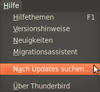
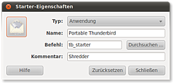

Portable Thunderbird
Dieser Artikel wurde für die folgenden Ubuntu-Versionen getestet:
Ubuntu 16.04 Xenial Xerus
Zum Verständnis dieses Artikels sind folgende Seiten hilfreich:
Mit einem portablen Thunderbird hat man die Möglichkeit, Thunderbird-Profile  , neue Thunderbirdversionen oder Erweiterungen gefahrlos auszuprobieren. Tester und Entwickler schätzen die Möglichkeit, eine zweite Thunderbird-Instanz auf dem eigenen Computer nutzen zu können, ohne die eigentliche Thunderbirdversion (und deren Profil) zu „zerschießen“.
, neue Thunderbirdversionen oder Erweiterungen gefahrlos auszuprobieren. Tester und Entwickler schätzen die Möglichkeit, eine zweite Thunderbird-Instanz auf dem eigenen Computer nutzen zu können, ohne die eigentliche Thunderbirdversion (und deren Profil) zu „zerschießen“.
Ein weiterer komfortabler Nebeneffekt ist, dass man sich den portablen Thunderbird – der Name verrät es bereits – auch auf einen USB-Stick kopieren kann und so seinen eigenen auf PC und Notebook genutzten Thunderbird mit allen Erweiterungen (Add-ons) und Lesezeichen immer dabei hat. Natürlich kann man diese Version auch als Backup der eigentlichen Thunderbird-Installation nutzen.
Hinweis:
Es wird in diesem Artikel vorausgesetzt, dass man sich im Homeverzeichnis befindet und dort einen neuen Ordner anlegt (thunderbird-portable), der dann für den zweiten (portablen) Thunderbird benutzt wird. Natürlich muss der Ordner nicht im Homeverzeichnis liegen oder wie vorgeschlagen heißen; dann jedoch muss dies vom Anwender angepasst werden.
Vorbereitung und Download¶
Man legt sich zuerst einen neuen Ordner (z. B. thunderbird-portable) an. Dies kann im Homeverzeichnis oder einem beliebigen anderen Verzeichnis erfolgen (gegebenenfalls Rechte beachten). Auch ein USB-Stick kann dazu benutzt werden; dieser muss dazu vorher eingebunden werden.
Hinweis!
Fremdsoftware kann das System gefährden.
Anmerkung: Das Thunderbird-Paket besorgt man sich bei Mozilla direkt; den Profilordner mit dem Shellskript von UbuntuFlo
Nun muss man sich noch zwei Dateien herunterladen:
Profil und Skript: Aus UbuntuFlos Downloadverzeichnis auf Dropbox kann man sich die beiden ebenfalls im Format tar.gz gepackten Dateien (Profilverzeichnis und Shellskript) herunterladen: thunderbird-portable.tar.gz
 (Checksum: d0c329d553cf3991e618b672b1fbe485 thunderbird-portable.tar.gz).
(Checksum: d0c329d553cf3991e618b672b1fbe485 thunderbird-portable.tar.gz).Thunderbird: Von der Mozilla-Seite
 lädt man sich die gewünschte Thunderbirdversion im Format tar.bz2 herunter, um den Ordner thunderbird zu erhalten. Wichtig ist hierbei, dass es sich um die Linuxversion des Thunderbird handelt (linux-i686). Informationen und Downloads zu anderen Versionen des Thunderbird sind unter Links zu finden.
lädt man sich die gewünschte Thunderbirdversion im Format tar.bz2 herunter, um den Ordner thunderbird zu erhalten. Wichtig ist hierbei, dass es sich um die Linuxversion des Thunderbird handelt (linux-i686). Informationen und Downloads zu anderen Versionen des Thunderbird sind unter Links zu finden.
Entpacken¶
Man entpackt (siehe Packprogramme) nun beide Dateien [1] in den zuvor erstellten Ordner (in diesem Beispiel ~/thunderbird-portable). Dies kann entweder grafisch über die GUI oder über das Terminal [2] gemacht werden.
Im Ordner ~/thunderbird-portable sollten sich jetzt drei Dateien befinden: thunderbird, profilordner und loader.sh. Weitere Informationen dazu unter dem Punkt Wissenswertes.
Achtung!
Man sollte sich spätestens an dieser Stelle davon überzeugen, dass man von seinem Thunderbird-Profilordner eine Sicherungskopie (Backup) gemacht hat.
Portable Thunderbird nutzen¶
Nachdem die beiden Dateien entpackt wurden, kann man den neuen Thunderbird auch schon benutzen. Dazu kann man einerseits das Terminal nutzen [3] oder sich einen Starter anlegen (siehe unten Starter anlegen).
Achtung!
Nicht den „normalen“ Thunderbird (thunderbird) über das Terminal starten. Für genau diesen Zweck wurde nämlich das Shellskript loader.sh erstellt.
Um dieses Skript zu starten, gibt man folgenden Befehl ins Terminal ein:
sh ~/thunderbird-portable/loader.sh
Einschränkungen¶
Man sollte sich darüber im Klaren sein, dass der beschriebene Weg einen voll funktionstüchtigen E-Mail Client installiert, dieser aber in einigen Punkten grundlegend vom systemeigenen Thunderbird abweicht.

Updates¶
Der neue Thunderbird lässt sich wie ein „normaler“ Thunderbird einsetzen und handhaben. Beachten muss man allerdings, dass er nicht wie der systemeigene Thunderbird über die Paketquellen mit Updates versorgt wird, sondern über "Hilfe -> Nach Updates suchen" im Thunderbird-Menü (siehe auch Autoupdate ). Bei neueren Versionen des Thunderbird lässt sich das Update-Verhalten unter "Bearbeiten -> Einstellungen" unter dem Menüpunkt "Erweitert" im Tab "Updates" konfigurieren. Empfehlenswert ist es, die Updates automatisch installieren zu lassen.
Einbindung ins Menü¶
Da der neue E-Mail Client nicht installiert, sondern nur aufgerufen wird, ist dieser nicht im Menü zu finden. Wer ihn zum Menü hinzufügen will, sollte den Abschnitt Starter anlegen befolgen.
Hinweis:
Die nachfolgenden Informationen sind optional umsetzbar. Mit dem bis hierhin vollzogenen Weg erhält man einen funktionstüchtigen und portablen Thunderbird, den man universell einsetzen kann.
Optionales¶
Anwender, die den portablen Thunderbird nicht zum Mitnehmen, sondern beispielsweise zum Testen neuer Thunderbird-Versionen und Ausprobieren neuer oder zusätzlicher Erweiterungen verwenden möchten, können sich diesen „stationär“ (= komfortablere Handhabung) einrichten.
Starter anlegen¶
Es gibt zwei Möglichkeiten, um einen Starter zu nutzen: Klassisch per direkten Aufruf des Programms oder über eine Verlinkung mit Hilfe des Befehls ln. Beide Möglichkeiten können innerhalb eines Programmstarters [4] verwendet werden.
Einfacher Starter¶
Möchte man sich einen Programmstarter z.B. auf dem Desktop anlegen, so kann man folgenden Befehl (Typ: Anwendung) nutzen, welcher im Vergleich zum obigen Befehl leicht modifiziert wurde:
sh ./thunderbird-portable/loader.sh
Des Weiteren sollte man die Datei loader.sh wie folgt anpassen:
1 2 3 | #!/bin/sh cd ~/thunderbird-portable "$PWD/thunderbird/thunderbird" -no-remote -profile "$PWD/profilordner" |
Die beiden Änderungen haben den Vorteil, dass sie recht universell einsetzbar sind und dennoch anpassbar bleiben.
Starter (Verlinkung)¶
 Möchte man den Vorteil des systemweiten Aufrufes nutzen, legt man sich dazu ein neues Skript (verknüpft beispielsweise auf dem Desktop) mit dem Namen starter.sh an, welches folgenden Inhalt hat:
1 2 3 | #!/bin/sh cd ~/thunderbird-portable ./loader.sh |
Nun nutzt man eine symbolische Verknüpfung (ln), um das Starter-Skript starter.sh mit dem Befehl tb-starter im Verzeichnis ~/bin zu verlinken:
ln -s ~/thunderbird-portable/starter.sh ~/bin/tb-starter
Das Skript loader.sh ändert man wie folgt ab:
1 2 | #!/bin/sh
thunderbird/thunderbird -no-remote -profile profilordner
|
Durch die Verlinkung nach /bin lässt sich der zweite Thunderbird aus jedem Pfad des System per tb-starter aufrufen.
Logo vergeben¶
Im nächsten Schritt kann man das rechts gezeigte Logo nutzen und verwenden. Es zeigt einen stilisierten Schredder und soll auf die Gefährlichkeit der jeweiligen Thunderbird-Entwicklungsversion hinweisen. Allerdings eignet es sich auch sehr gut, um deutlich zu machen, dass man nicht den „normalen“ Thunderbird startet. Die Icons stehen im Order thunderbird/chrome/icons/default zur Nutzung bereit.
Wissenswertes¶
Nachfolgend einige Hintergrundinformationen zum Skript und den beiden Ordnern.
Hinweis:
Die nachfolgenden Informationen beziehen sich nur auf den allgemeinen Teil dieses Artikels. Der optionale Teil und die dort gezeigten Anpassungen werden nachfolgend nicht erklärt.
Enthaltene Dateien¶
In dem Ordner thunderbird-portable im Homeverzeichnis befinden sich nun die zwei extrahierten Ordner und eine Datei:
| Enthaltene Dateien im Ordner thunderbird-portable | ||
| Name | Eigenschaft | Funktion |
| loader.sh | Datei (Skript) | Shellskript, das den portablen Thunderbird startet |
| thunderbird | Ordner | die von Mozilla heruntergeladene Thunderbirdversion |
| profilordner | Ordner | beinhaltet das (noch jungfräuliche) Thunderbird-Profil |
Das Shellskript¶
Das Shellskript loader.sh enthält folgenden Zweizeiler:
1 2 | #!/bin/sh "$PWD/thunderbird-portable/thunderbird/thunderbird" -no-remote -profile "$PWD/thunderbird-portable/profilordner" |
Es wird im Skript der Befehl pwd benutzt, der den Namen des gerade verwendeten Verzeichnisses ausgibt. Weitere Informationen im Artikel pwd.
Der eigentliche Befehl¶
Der eigentliche Befehl im Skript gibt an, welche Thunderbird-Datei und welches Thunderbird-Profil geladen werden soll:
"pfad_zum_portable_bird/thunderbird" -no-remote -profile "pfad_zum_portable_bird/profilordner"
Dieser kann den jeweiligen Bedürfnissen angepasst werden [5] und besteht aus vier Teilen:
| Befehl des Skriptes | ||
| Name | Eigenschaft | Funktion |
"pfad_zum_portable_bird/thunderbird" | Befehl | Startet das Shellskript thunderbird im Portable-Ordner thunderbird |
-no-remote | Option | Nutzung des neu erstellten (portablen) Thunderbird parallel zur eigentlichen Thunderbird-Instanz. Ermöglicht wird dies durch den Befehl -no-remote (teilweise auch als export MOZ_NO_REMOTE=1 bekannt). Siehe Abschnitt Links. |
-profile | Option | Diese gibt an, dass das nachfolgende Profil geladen werden soll |
"pfad_zum_portable_bird/profilordner" | Befehl | Zeigt den Ort des (portablen) Profilordners an und startet diesen |
Links¶
mozillaZine-Knowledge Base: -no-remote und Profile
Caschys Blog: Artikel zu Thunderbird Portable und diesem Wikiartikel
- Erstellt mit Inyoka
-
 2004 – 2017 ubuntuusers.de • Einige Rechte vorbehalten
2004 – 2017 ubuntuusers.de • Einige Rechte vorbehalten
Lizenz • Kontakt • Datenschutz • Impressum • Serverstatus -
Serverhousing gespendet von